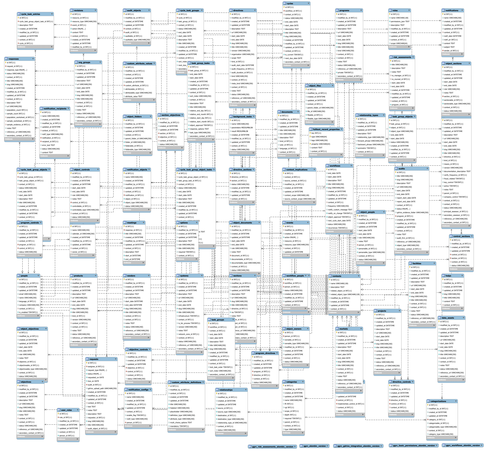

Data Layer¶
Data Model¶
The backend data model (written in Python) lives in src/<module>/models.
The data model classes and fields are mapped to database tables and columns using SQLAlchemy. These mappings are defined in the model classes themselves. Constraints used for validation and data integrity are described within the model classes as well.
Database Schema¶

Internal vs. External Model¶
An abstraction exists between the actual data model and the external representation of the data model rendered through the REST interface. This abstraction is necessary because it decouples the external structure of a model from the actual internal structure of the model. This decoupling allows changes to be made to the internal model without violating the contract provided by the REST API. Without this abstraction changes made to the internal model could cause consumers of the REST API to break, and that would be bad.
The “decoupling” is two places:
- First, the resource-representation is constructed using the Builder
class (
ggrc.builder.json), the behavior of which is currently defined from the model and the_api_attrsattributes. - Second, the interaction of resources and the database is defined by
the Resource class (
ggrc.services.common.Resource). Theservice(...)mappings inggrc.services.__init__are defining API endpoints and linking them to Builder classes (autogenerated from the supplied model).
Attributes to be included in the external representation of the model
are declared via the _api_attrs attribute of a Python model.
Attributes not included in that list will not be included in external
representations of the model.
Database Migrations¶
Migrations are implemented and executed via
alembic, augmented to
support extension modules in ggrc.migrate. (The standard alembic
command will not do the right thing.)
Migration scripts are written in Python and live in
src/<module>/migrations/versions.
Migrations are executed by running db_migrate from the command line.
This effectively runs
python -c "import ggrc.migrate; ggrc.migrate.upgradeall()"
which iterates through existing modules and runs missing migrations for each.
Migrations can be autogenerated from a fully-migrated environment by first making changes to in-Python model definitions, and then executing (e.g.)
python -m ggrc.migrate ggrc_workflows revision --autogenerate -m "Add Cycle.is_current"
This will create a new migration file with many unwanted changes (indexes, changes to nullability, etc) due to inconsistencies between database state and model definition. These should eventually be fixed. (Indexes should eventually be consistently named, etc.)